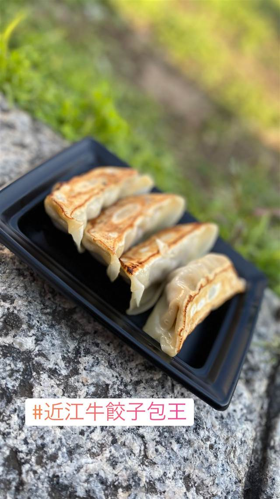
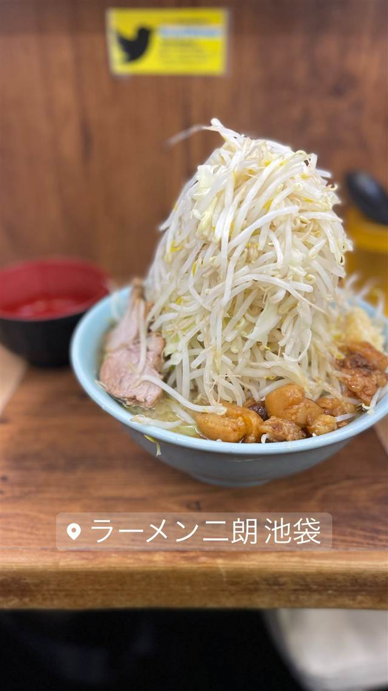
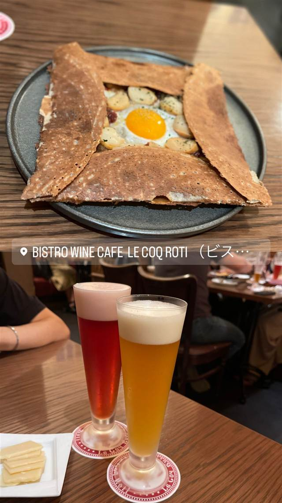
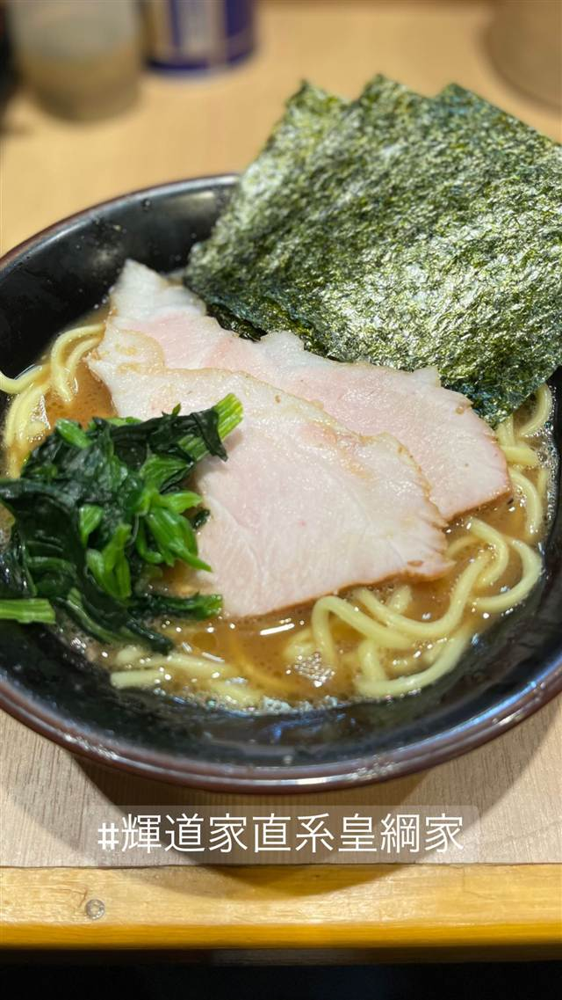
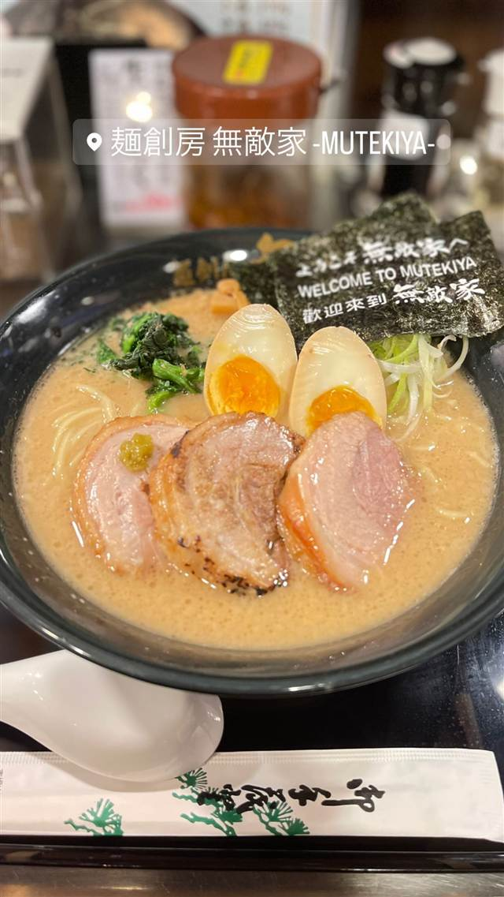

近江牛の肉餃子 包王
近江牛をふんだんに使い肉汁あふれる牛とん包餃子
近江牛餃子包王
2003年に滋賀県で生まれた餃子専門店で、中国東北地方の伝統的な水餃子の再現を目指して誕生した。看板の「牛とん包」は近江牛をふんだんに使い、噛むと肉汁があふれる新食感の餃子として、池袋ナンジャタウンの餃子スタジアムで人気を集めている。
TRIVIA
豆知識
- 国産牛肉のブランドである近江牛を使う珍しい餃子専門店。
- モンドセレクションで金賞を獲得した餃子として紹介されている。
REVIEWS
世間の評判
3.16食べログ
肉汁あふれる近江牛餃子
- 近江牛を使った肉汁あふれる餃子を評価する声が多い
- コラボ企画の時は行列ができ並ぶことがあるという声もある
ホットペッパー 口コミ35件
| 創業 | 2003年、滋賀県にて誕生（中国東北地方の伝統的な水餃子の再現を目指して創業） |
|---|---|
| 看板 | 近江牛をふんだんに使った「牛とん包（餃子）」。 |
| こだわり | 近江牛を贅沢に使用し、噛むと肉汁があふれる小籠包と餃子の中間のような新食感に仕上げている。 |
| 掲載・評価 | 世界食品コンテスト「モンドセレクション」金賞受賞（世界初の金賞受賞餃子とされる）。ナンジャ餃子スタジアムの人気餃子ランキングでも上位に選ばれたことがある。 |
| どこから | 都心 |
| 予算 | 昼 ¥501～¥1,000 夜 ¥501～¥1,000 |
| 場所 | 池袋駅 東京都豊島区東池袋 サンシャインシティ(ナンジャタウン内) |
| メモ | 池袋サンシャインシティ「ナンジャタウン」内の常設餃子フードコート「ナンジャ餃子スタジアム」に出店。3個480円程度で購入可能。 |
食べたもの：餃子(フェス)
NEARBY
近い店・同じ系統の店
-

★ 二郎系(直系) 池袋駅（東口） ラーメン二郎 池袋東口店 看板屋の伝達違いから「二郎」に、極太麺の直系ラーメン 昼 ～¥999 夜 ～¥999 -

ビストロ 池袋駅 Bistro Wine Cafe Le Coq Roti（ルコックロティ） 岩手県産の鶏を2日間マリネしたロティサリーチキンと十割ガレット 昼 ¥2,000～¥2,999 夜 ¥4,000～¥4,999 -
 味噌 池袋駅
味噌麺処 田坂屋
花道庵で5年半修行し公認で独立した濃厚味噌ラーメン
昼 ～¥999 夜 ～¥999
味噌 池袋駅
味噌麺処 田坂屋
花道庵で5年半修行し公認で独立した濃厚味噌ラーメン
昼 ～¥999 夜 ～¥999
-

家系 池袋 輝道家直系 皇綱家（きづなや） 元力士の店主が営む、輝道家直系の家系ラーメン 昼 ¥1,000～¥1,999 夜 ¥1,000～¥1,999 -

豚骨 池袋駅（東口） 麺創房 無敵家 天然素材でじっくり煮込む濃厚クリーミー豚骨、深夜4時まで営業 昼 ～¥999 夜 ～¥999 -
 餃子専門 亀戸駅
亀戸餃子 本店
座ると自動で2皿確定、1955年創業の下町餃子専門店
昼 ～¥999 夜 ～¥999
餃子専門 亀戸駅
亀戸餃子 本店
座ると自動で2皿確定、1955年創業の下町餃子専門店
昼 ～¥999 夜 ～¥999